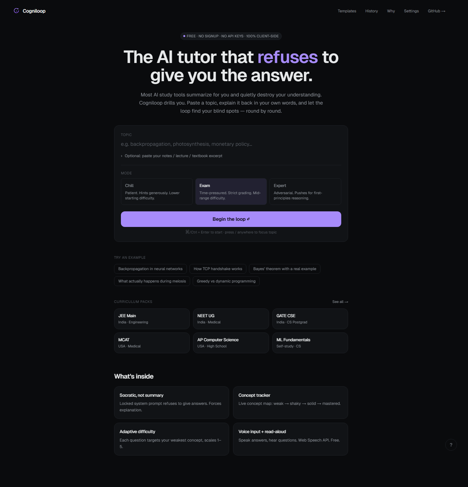
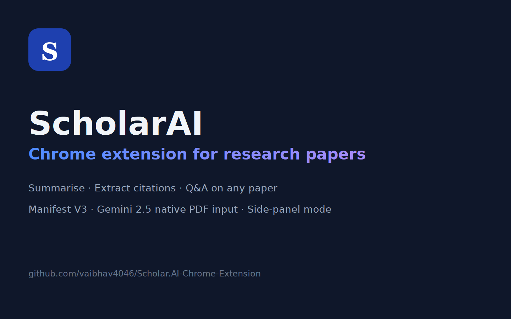

Cogniloop — the AI tutor that refuses to give answers
Anti-summary study tool. Locked Socratic prompt forces explain-back, grades 0-3, adapts to weakest concept. weak → shaky → solid → mastered. Built solo in a week.
Liverpool, UK · UK Right to Work · Graduate visa from Jan 2027
Currently building UniOffer / ADMITOS — an AI-guided admissions platform — at Meta Solution Technologies, after two years freelancing 20+ LLM-powered apps for paying clients on Claude, OpenAI and LangChain. MSc Advanced Data Science & AI at the University of Liverpool.
About
Full-stack engineer with two years of applied experience pairing production React/TypeScript front-ends with Python AI services in real shipping products. I write code that other people maintain, document the workflows so non-engineers can run them, and use AI tooling daily as part of the work rather than as a side project.
Day-to-day I work in Next.js 15, React 19, TypeScript and Tailwind on the front; FastAPI, Node.js, Postgres + pgvector, Redis and BullMQ on the back; and OpenAI, Gemini, LangChain and MCP servers when the product needs intelligence. Auth with Supabase (Google OAuth, magic link, PKCE), shipping on Vercel and GCP Cloud Run.
I default to written specifications before code, runbooks alongside features, and reviews that move the codebase forward — easier to work in than I found it.
Experience
Selected projects
A few public projects that show how I work — full-stack apps, browser tools and agentic systems.

Anti-summary study tool. Locked Socratic prompt forces explain-back, grades 0-3, adapts to weakest concept. weak → shaky → solid → mastered. Built solo in a week.
Multi-tenant notes SaaS with role-based access, plan limits and clean REST boundaries. JWT auth, RBAC, deployed on Vercel.

Browser-side tool that summarises research papers and webpages with citation export. Manifest V3, Gemini 2.5 native PDF input, side-panel mode.
AI-assisted coding workflow with a fast iterating UI and structured prompt chains. Multi-step orchestration, replayable runs.
The registry of Model Context Protocol servers. 800+ servers, copy-paste install snippets, daily auto-sync from Glama + the official MCP repo. Next.js 15 RSC.
Extract structured insights from medical research papers in seconds. PICO frame, confidence scoring, multi-source search across PubMed + bioRxiv + medRxiv.
Offline benchmark suite for local Ollama LLMs on Windows. Per-model latency, JSON-schema output guardrails, comparative reports. Local-first.
Skills
Education
University of Liverpool, United Kingdom · Jan 2026 – Jan 2027
Christ University, Bengaluru, India · 2022 – 2025 · CGPA 7.86 / 10
Contact
UK-based, eligible to work without sponsorship. Graduate visa from Jan 2027. Replies within a working day.